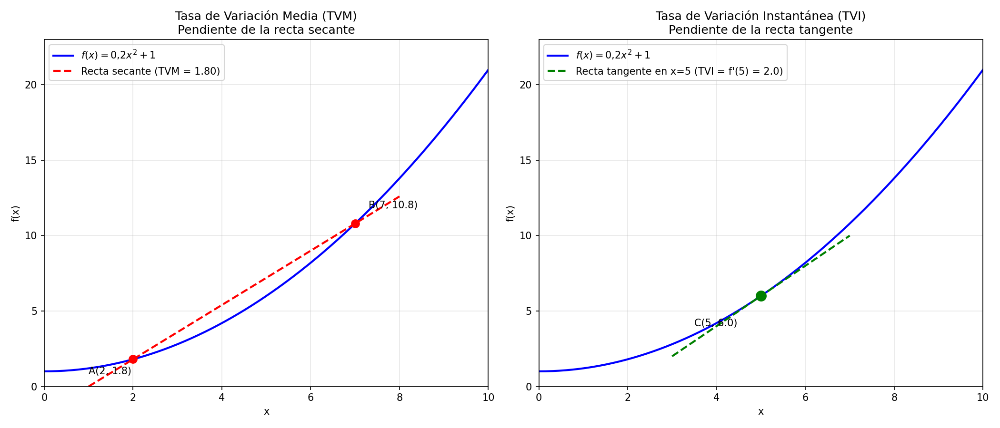
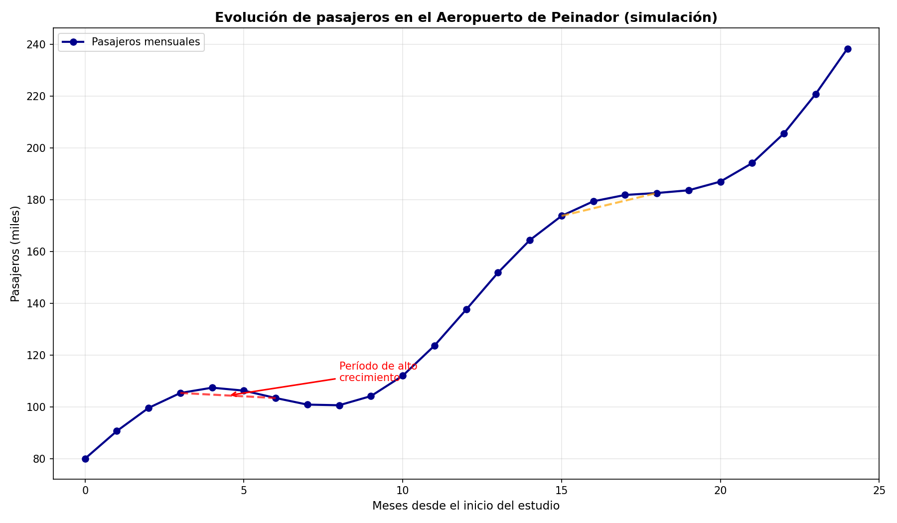

Sea \(f(x)\) una función y dos puntos \(a\) y \(b\) en su dominio. La tasa de variación media de \(f\) en el intervalo \([a,b]\) es:
\[ TVM_{[a,b]} = \frac{f(b) - f(a)}{b - a} \]Interpretación geométrica: Es la pendiente de la recta secante que pasa por los puntos \((a, f(a))\) y \((b, f(b))\).
Interpretación física: Representa la velocidad media en un intervalo de tiempo.
La tasa de variación instantánea de \(f\) en un punto \(a\) es el límite de la TVM cuando el intervalo se hace infinitesimalmente pequeño:
\[ TVI_a = \lim_{h \to 0} \frac{f(a+h) - f(a)}{h} \]Interpretación geométrica: Es la pendiente de la recta tangente a la curva en el punto \((a, f(a))\).
Interpretación física: Representa la velocidad instantánea en un momento concreto.
Nota importante: Esta TVI se denomina derivada de \(f\) en el punto \(a\), y se denota \(f'(a)\).

Ejercicio 1: Repaso de pendiente
Calcula la pendiente de la recta que pasa por los puntos \(A(2, 5)\) y \(B(6, 13)\). ¿Qué significa ese valor?
\(m = \frac{13-5}{6-2} = \frac{8}{4} = 2\)
Interpretación: Por cada unidad que aumenta \(x\), \(y\) aumenta 2 unidades.
Ejercicio 2: Exportaciones del Puerto de Vigo
El valor de las exportaciones del Puerto de Vigo (en millones de euros) en los últimos 5 años ha sido:
a) Calcula la tasa de variación media de las exportaciones en ese período.
b) Si el crecimiento fuera lineal, ¿qué ecuación representaría las exportaciones \(E(t)\) en función del tiempo?
a) \(TVM = \frac{520-420}{5-0} = \frac{100}{5} = 20\) millones de €/año
Interpretación: Las exportaciones crecen a un ritmo medio de 20 millones de euros por año.
b) \(E(t) = 20t + 420\)
Ejercicio 3: Análisis gráfico de datos curvos
Observa la gráfica de evolución de pasajeros del aeropuerto de Peinador. ¿En qué períodos la pendiente de la recta secante es mayor? ¿Qué significa esto en términos de crecimiento?

La pendiente es mayor donde la curva es más inclinada. Esto indica períodos de crecimiento más acelerado en el número de pasajeros (por ejemplo, en los meses de verano o tras una campaña de nuevas rutas).
Ejercicio 4: Precio del gasoil para la flota de O Berbés
El precio del gasoil (en €/litro) para la flota pesquera viene dado por la función \(P(t) = 0{,}02t^2 + 0{,}10t + 1{,}20\), donde \(t\) es el tiempo en meses desde enero.
a) Calcula la TVM del precio entre enero (\(t=0\)) y marzo (\(t=2\)).
b) Calcula la TVM entre marzo (\(t=2\)) y junio (\(t=5\)).
c) ¿En qué período creció más rápidamente el precio?
a) \(P(0) = 1{,}20\), \(P(2) = 0{,}02(4) + 0{,}10(2) + 1{,}20 = 1{,}48\)
\(TVM_{[0,2]} = \frac{1{,}48 - 1{,}20}{2} = \frac{0{,}28}{2} = 0{,}14\) €/litro por mes
b) \(P(5) = 0{,}02(25) + 0{,}10(5) + 1{,}20 = 2{,}20\)
\(TVM_{[2,5]} = \frac{2{,}20 - 1{,}48}{3} = \frac{0{,}72}{3} = 0{,}24\) €/litro por mes
c) Entre marzo y junio, ya que la TVM es mayor (0,24 frente a 0,14).
Ejercicio 5: TVM en diferentes intervalos
Dada la función \(f(x) = x^2 - 3x + 2\), calcula la TVM en los intervalos:
a) \([1, 3]\)
b) \([1, 2]\)
c) \([1, 1{,}5]\)
a) \(f(1) = 0\), \(f(3) = 2 \Rightarrow TVM_{[1,3]} = \frac{2-0}{2} = 1\)
b) \(f(2) = -1 \Rightarrow TVM_{[1,2]} = \frac{-1-0}{1} = -1\)
c) \(f(1{,}5) = -0{,}25 \Rightarrow TVM_{[1,1.5]} = \frac{-0{,}25-0}{0{,}5} = -0{,}5\)
Ejercicio 6: Introducción a la TVI
El número de pasajeros en el aeropuerto de Peinador (en miles) viene dado por \(N(t) = 2t^2 + 5t + 100\), donde \(t\) es el tiempo en meses desde el inicio del año.
a) Calcula la TVM de pasajeros entre \(t=3\) (marzo) y \(t=3{,}1\).
b) Calcula la TVM entre \(t=3\) y \(t=3{,}01\).
c) ¿A qué valor se aproxima la TVM cuando el intervalo es cada vez más pequeño? ¿Qué representa ese valor?
a) \(N(3) = 18 + 15 + 100 = 133\)
\(N(3{,}1) = 2(9{,}61) + 5(3{,}1) + 100 = 134{,}72\)
\(TVM_{[3, 3.1]} = \frac{134{,}72 - 133}{0{,}1} = 17{,}2\) miles de pasajeros/mes
b) \(N(3{,}01) = 2(9{,}0601) + 5(3{,}01) + 100 = 133{,}1702\)
\(TVM_{[3, 3.01]} = \frac{133{,}1702 - 133}{0{,}01} = 17{,}02\) miles de pasajeros/mes
c) El valor se aproxima a 17. Este es el ritmo de crecimiento instantáneo (TVI) en \(t=3\), es decir, la derivada \(N'(3)\).
Ejercicio 7: Cálculo de TVI mediante límite
Para la función \(f(x) = x^2\), calcula la TVI en el punto \(x=2\) usando la definición:
\[ f'(2) = \lim_{h \to 0} \frac{f(2+h) - f(2)}{h} \]\(f(2) = 4\), \(f(2+h) = (2+h)^2 = 4 + 4h + h^2\)
\(f'(2) = \lim_{h \to 0} \frac{4 + 4h + h^2 - 4}{h} = \lim_{h \to 0} \frac{4h + h^2}{h}\)
\(= \lim_{h \to 0} (4 + h) = 4\)
Interpretación: La pendiente de la recta tangente a \(y=x^2\) en el punto \((2,4)\) es 4.
Contexto: En la línea de montaje de Stellantis en Vigo, un vehículo se desplaza según la función de posición \(s(t) = 0{,}5t^2 + 2t\) (en metros), donde \(t\) es el tiempo en segundos.
Tarea 1: Velocidad media
Calcula la velocidad media del vehículo entre \(t=1\) y \(t=4\) segundos.
\(s(1) = 2{,}5\), \(s(4) = 16\)
\(v_{media} = \frac{16 - 2{,}5}{4-1} = \frac{13{,}5}{3} = 4{,}5\) m/s
Tarea 2: Velocidad instantánea
Calcula la velocidad instantánea en \(t=3\) segundos calculando la TVM en intervalos cada vez más pequeños: \([3, 3{,}1]\), \([3, 3{,}01]\), \([3, 3{,}001]\).
\(s(3) = 10{,}5\)
\(TVM_{[3,3.1]} = \frac{s(3{,}1)-s(3)}{0{,}1} = \frac{11{,}005-10{,}5}{0{,}1} = 5{,}05\) m/s
\(TVM_{[3,3.01]} = \frac{s(3{,}01)-s(3)}{0{,}01} = \frac{10{,}55005-10{,}5}{0{,}01} = 5{,}005\) m/s
\(TVM_{[3,3.001]} \approx 5{,}0005\) m/s
Conclusión: La velocidad instantánea en \(t=3\) es \(v(3) = 5\) m/s.
Tarea 3: Interpretación física
¿Qué indica el signo positivo de la velocidad? Si la velocidad instantánea fuera 0 en algún momento, ¿qué estaría ocurriendo con el vehículo?
El signo positivo indica que el vehículo avanza (la posición aumenta con el tiempo). Si \(v=0\), el vehículo estaría momentáneamente detenido.
Ejercicio 8
La temperatura (en °C) en las instalaciones de una conservera de Vigo viene dada por \(T(t) = -t^2 + 8t + 5\), donde \(t\) es el tiempo en horas desde las 8:00.
a) Calcula la TVM de temperatura entre las 10:00 (\(t=2\)) y las 14:00 (\(t=6\)).
b) ¿Cuándo la temperatura deja de subir? (Pista: cuando la TVM se hace negativa)
a) \(T(2) = -4 + 16 + 5 = 17\), \(T(6) = -36 + 48 + 5 = 17\)
\(TVM_{[2,6]} = \frac{17-17}{4} = 0\)
Interpretación: La temperatura media no varía entre las 10:00 y las 14:00, aunque puede haber subido y bajado en ese intervalo.
b) El vértice de la parábola está en \(t = \frac{-8}{2(-1)} = 4\) (las 12:00). A partir de ahí, la temperatura empieza a descender.
Ejercicio 9
Dada \(f(x) = 3x^2 - 5x + 1\), calcula la TVI en \(x=1\) usando la definición con límite.
\(f(1) = -1\), \(f(1+h) = 3(1+2h+h^2) - 5(1+h) + 1 = 3 + 6h + 3h^2 - 5 - 5h + 1 = -1 + h + 3h^2\)
\(f'(1) = \lim_{h \to 0} \frac{-1+h+3h^2-(-1)}{h} = \lim_{h \to 0} \frac{h+3h^2}{h} = \lim_{h \to 0} (1+3h) = 1\)
Ejercicio 10
El beneficio mensual (en miles de euros) de una empresa de transporte marítimo es \(B(x) = -2x^2 + 16x - 10\), donde \(x\) es el número de rutas activas.
a) Calcula la TVM del beneficio entre 2 y 5 rutas.
b) ¿Qué indica el signo de esta TVM?
a) \(B(2) = -8 + 32 - 10 = 14\), \(B(5) = -50 + 80 - 10 = 20\)
\(TVM_{[2,5]} = \frac{20-14}{3} = 2\) miles de €/ruta
b) El signo positivo indica que el beneficio aumenta cuando se incrementa el número de rutas (en ese intervalo).